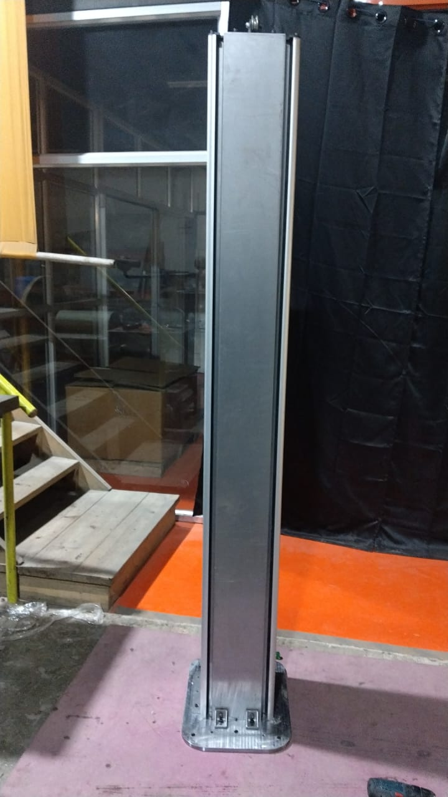
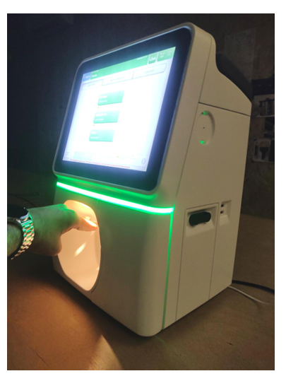
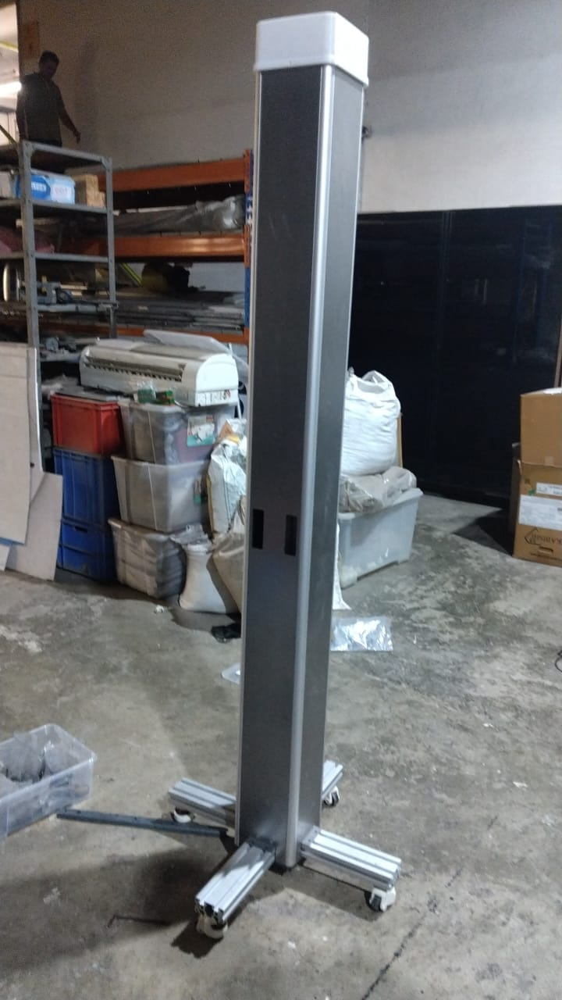
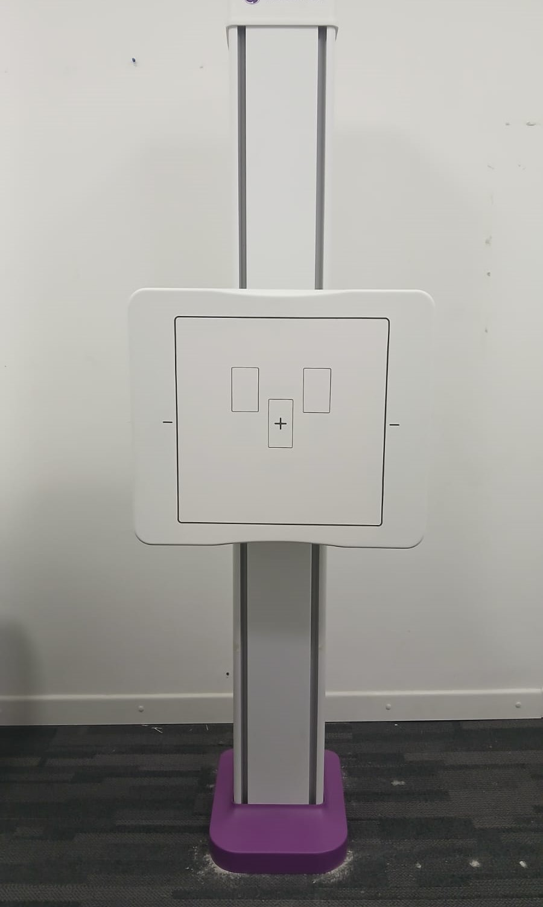
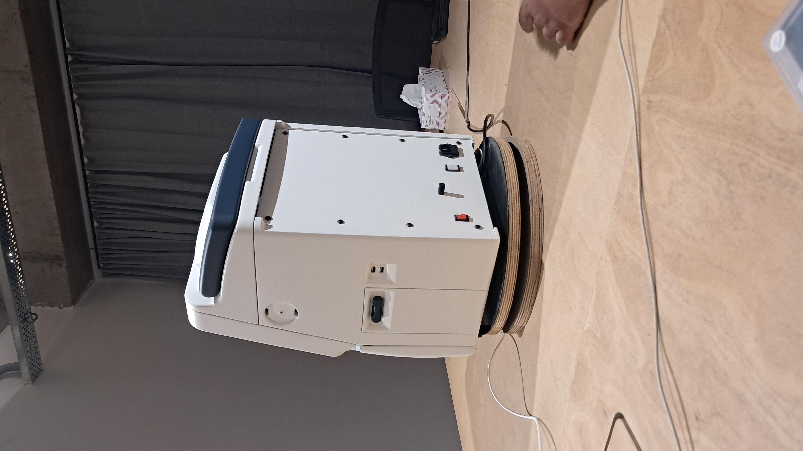

Built and fielded two working prototypes — a walk-through security screening gate and a point-of-care blood gas analyzer test fixture — so product and human-factors teams could run real user trials before committing to tooling. The job was as much about vendors, cost, and schedule as it was about the hardware.


Both clients needed something identical in spirit but different in form: a rig that behaved and handled like the finished product, ready in weeks rather than the months a tooled build would take, and cheap enough to risk in the hands of test users.
The screening gate had to stand freely, survive repeated walk-through testing, and expose its service panel without looking like an unfinished frame. The analyzer fixture had to hold a production unit (a Werfen GEM Premier 3500) on a rotating base so researchers could study reach, viewing angle, and one-handed cartridge loading without redesigning the instrument itself.
I treated each build as a small program rather than a one-off model shop job: scope and BOM first, vendor sourcing second, then fabrication and assembly against a fixed budget and date. Every structural part was specified in aluminium extrusion and sheet where possible, so changes during testing meant swapping a panel, not remaking the frame.
For the analyzer rig, the turntable base was built as a separate, reusable sub-assembly so the same fixture could support other instruments in later studies.


Extruded-aluminium frame with removable side cladding and a rear service bay for electronics access. Built first as a bare structural pass for fit and stability, then re-clad for the user-facing trial, mounted on a wheeled base so it could move between test locations without re-rigging.

A two-tier rotating plywood base carrying a Werfen GEM Premier 3500, letting researchers spin the unit to any approach angle mid-session. Cabling was routed and slack-managed underneath so power, USB, and network runs never entered the participant's line of sight.
Each fixture went through a fast structural pass before any finish work, so problems with stability or access got caught before time was spent on cladding.
Neither build used a single fabricator. Extrusion cutting, sheet-metal cladding, and the plywood turntable each went to whichever shop was fastest and cheapest for that specific piece.
Every part carried a target cost before it was quoted, built up from material, machining, and finish, so a quote could be judged against a number rather than gut feel.
Both programs ran against a fixed envelope, so schedule and spend were reviewed together weekly rather than at the end of the build.
| Line item | Screening gate | Analyzer fixture |
|---|---|---|
| Structure & framing | 38% | 30% |
| Cladding & finish | 26% | 18% |
| Fixture mechanisms (base, rotation) | 14% | 32% |
| Vendor tooling & setup | 12% | 10% |
| Contingency | 10% | 10% |
| Total | 100% | 100% |